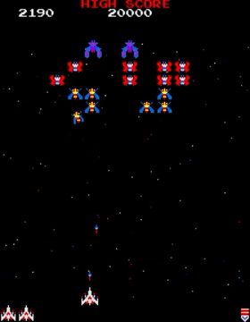

Living Draft
The current narrative source of truth is `WHITE_PAPER.md`. It should keep moving with the project instead of becoming a one-off summary.
A hosted, human-readable home for the living white paper: what this project is trying to prove, how Platinum and the games fit together, why the conformance program exists, and how the narrative is versioned over time.
Where this work lives in the repo and how it should be maintained.
The current narrative source of truth is `WHITE_PAPER.md`. It should keep moving with the project instead of becoming a one-off summary.
The `white-paper/` directory is the durable project area for supporting material: the working-area README, citation ledger, and versioned white-paper releases.
Meaningful white-paper revisions should be snapshotted under `white-paper/releases/` with the Markdown, PDF, and PDF metadata preserved together so the narrative can be compared over time just like the software.
This generated page is the ongoing hosted, human-readable form. It should stay wired into the same documentation family as the project guide, platform guide, player guide, and release dashboard.
Who this page is for and how it should balance readability with depth.
Assume curiosity, technical interest, and some builder intuition, but do not assume deep platform, browser, arcade, or conformance-program expertise.
The white paper should explain the thesis, architecture, release discipline, evidence program, and AI method clearly without becoming a complete internal manual.
Hosted guides, dashboards, release notes, and source docs should provide the extra detail so the main paper can stay focused and persuasive.
The main ways a reader should enter the white-paper story and related project surfaces.
Jump directly to the current rendered white paper inside this hosted page.
See the maintained list of outside ideas, reference families, and methodological influences.
Open the current lane PDF version of the white paper with explicit version/date metadata.
Open the generated talk-through slide overview that travels beside the white paper in each release lane.
Read the updateable role definitions for manager, developer, architect, release authority, review, conformance, security, audio, and documentation automation.
Inspect the generated metadata for the current lane slide overview artifact.
Inspect the generated metadata for the current lane PDF artifact.
Return to the broader hosted project map for Platinum, Aurora, Galaxy Guardians, ingestion, conformance, and release state.
Open the current cross-thread priority map for Aurora challenge stages, Guardians v1, personas, ingestion, platform boundaries, and release docs.
Open the forward-looking release-family schedule that maps workstreams, GitHub issues, documentation, and lane gates.
Read the shorter public-facing project summary for the current lane.
Open the live score, confidence, cost, and investment dashboard when the narrative needs the measured readout.
Open the repo-owned white-paper project area in GitHub.
Open the current Markdown source directly.
How the white paper should be reviewed as a release surface instead of treated like an unreviewed note.
The hosted page should read well on desktop and mobile, keep diagrams and screenshots legible, and avoid accidental raw Markdown leakage or repetitive section structure.
The printable/exportable PDF should carry explicit version/date information and avoid bad page breaks, oversized dark backgrounds, or weak diagram reproduction.
Reviewers should tighten repetition, question weak claims, verify references, and treat the white paper as part of the release promise rather than as detached commentary.
The white-paper review spine should also verify preserved-source integrity and catch stale source-path drift in active evidence docs, not only PDF formatting issues.
The human, agent, machine, and build-process roles that make the operating model assignable and reviewable.
Manager, developer, architect, release authority, parallel worker, security, code review, conformance, audio, player-visible review, and documentation generation roles are now named instead of implied.
`white-paper/PROJECT_ROLES.md` is the updateable role source. It records definition, invocation timing, automation status, and links to detailed repo sources.
Build and harness automation can refresh evidence and block weak releases, but beta/production authority and player-visible quality judgment remain explicit human decisions.
Open the rendered role table and maintenance notes.
See the active project state used to orient new sessions.
See how MacBook release authority and iMac parallel work are separated.
The first durable release pattern for preserving the narrative over time.
The first seeded snapshot of the white paper in browsable release form.
Short note describing what the first white-paper release established and what should happen next.
The next best steps for turning the current seed into a true v1 white-paper release.
The living white paper as it exists in the repo today, rendered into the same hosted-document family as the other project guides.
Generated from WHITE_PAPER.md during build.
Status: living white paper Current draft: v0.4.2-draft Date: 2026-10-25 Audience: broad technical readers, interested builders, collaborators, future reviewers, and public-facing project storytelling
This document is the maintained narrative explanation of what this project is doing, why it is being built this way, and how the approach evolves over time. It is intended to be both a promotional piece and a disciplined reminder to the team: the software, the evidence program, the release process, and the generative-AI workflow all matter together.
See also:
Private companion store only; not exposed from the public repo.
This project is not only a browser game repo.
It is a deliberate attempt to build a professional software program around a harder claim:
of vague taste alone
keep AI-assisted work honest
Platinum is the reusable browser-arcade host. Aurora Galactica is the first shipped application on that host. Galaxy Guardians is the second-game proof that the platform, ingestion program, and conformance discipline can grow beyond a single title.
The larger point is not "we used AI to make a game."
The larger point is that we are building a system in which:
rerunnable artifacts
1. Thesis: what this project is trying to prove.2. Program snapshot: where Platinum, Aurora, and Galaxy Guardians standright now.
3. Five-layer operating model: platform, games, ingestion, harnesses, andrelease economics as one program.
4. Ingestion strategy: how external evidence becomes structured game truth.5. Challenge-stage ingestion case study: how richer reference recoverychanged the plan for Aurora's hardest gameplay gap.
6. Harnessing and conformance: how we measure quality instead of assertingit.
7. Release discipline: how dev, beta, and production remain explicit andprofessional.
8. Generative AI role: how model work accelerates the project withoutreplacing evidence.
9. Working loop: how the project turns a gap into evidence, implementation,measurement, and release learning.
10. Historical evolution: how the project moved from launch to platform tomulti-game conformance.
11. Citation program: how outside ideas and source recovery work should betracked explicitly.
12. Related work: how outside agent/evaluator work informs the project.13. Internal canonical docs: how this paper stays short without losingtraceability.
14. Why this project matters: why the project is larger than a game repo.15. Living-paper policy: how this white paper should be maintained andreleased over time.
This page is meant to be the readable narrative layer, not the whole archive.
project.
evidence pack.
operational context, jump into the linked hosted documentation rather than making this paper carry everything.
Useful deeper surfaces:
The core thesis of this project is that generative-AI-assisted software can be built aggressively without becoming hand-wavy, fragile, or unprofessional.
That requires a few non-negotiable rules:
accidental
rerunnable checks
increasingly move into local CPU/browser harnesses
This is why Platinum, Aurora, Galaxy Guardians, ingestion, harnesses, scorecards, review packets, and release notes belong in the same story.

The image above is intentionally simple: it reminds the reader that all of the process, evidence, and release discipline in this paper exist in service of a real playable artifact, not only a methodology exercise.
Further detail:
The measurements below and the challenge-stage case study describe the 2026-06-07 evidence baseline. They are not new October measurements. This editorial revision was prepared for the 1.4.2 release, built from the approved 1.4.2-beta.5 gameplay.
The historical baseline can be described in one page:
| Area | Current role | Why it matters |
|---|---|---|
Platinum | Shipped browser-arcade host platform | Proves that reusable shell, services, lane model, and release discipline can exist without absorbing game-specific truth. |
Aurora Galactica | First shipped playable Platinum application | Serves as the strongest current proof that the platform can host a real public game and improve its conformance over time. |
Galaxy Guardians | Preview-first second-game and first-class ingestion/conformance target | Proves that the platform and the evidence program can support a second game without simply cloning Aurora. |
| Ingestion framework | Source-to-structured-evidence pipeline | Keeps new-game and fidelity work anchored in manifests, clips, event logs, waveforms, contact sheets, and provenance. |
| Harness and conformance system | Scorecards, correspondence checks, dashboards, and gates | Turns quality claims into measurable, reviewable outputs. |
| Release and economics program | Lane discipline, review packets, docs refresh, local-vs-cloud resource accounting | Makes the project look and behave like a professional release program rather than an endless prototype. |
Current maintained metric read:
| Scope | Current read | Interpretation |
|---|---|---|
| Project conformance economics | 8.7/10 roll-up | Strong broad score, but the next release value depends on closing the worst rows rather than polishing the average. |
| Application artifact conformance | 7.46/10 | The weakest row is impact-explosion-visual-feedback, so damage, hit, loss, and explosion feedback remain a major user-experience target. |
Aurora challenge-stage set pieces | 4.3/10 strict score | The clearest gameplay-conformance blocker: movement, graphics, alien novelty, and target-video fit are still far from mature Galaga-like bonus exhibitions. |
Aurora challenge grammar readiness | 25/25 reference-backed first-five group contracts; 8.6/10 control readiness | Analysis is now ahead of runtime implementation; the next useful work is promotion-safe movement grammar, not more broad planning. |
Galaxy Guardians long-surface/persona review | 7.0/10 | Credible second-game process proof, but not yet a production-mature public game; v1 needs opening-slice quality, score/result identity, platform parity, and Watch/Rival/persona reuse. |
| Resource/economics ledger | 904 measured runs, 58,277s tracked wall time, 58,392s CPU time, about 1.48GB artifact accounting | Shows the operating doctrine: turn model-assisted insight into local CPU/browser harnesses and track the cost of quality movement. |
In the June 2026 historical baseline (2026-06-07), the evidence program also became more concrete:
iMacM1 to this MacBook M4 for the currentrelease path
PDF metadata are refreshed enough for publish:check:dev
/dev then carried the 1.4.0.1 forward-review line,including the consolidated Aurora challenge grammar, Guardians ingestion/conformance cleanup, refreshed dashboards, public project guide, white-paper PDF, slides, release-schedule spine, and review packet
PROJECT_WIDE_WORKSTREAM_ALIGNMENT_2026-06-07.md
Space Invaders evidence lanes, including manuals, strategy/walkthrough bundles, sprite/cue packages, challenge-stage videos, and cabinet/spec references
summaries stay in this repo, while copied or derived source bytes belong in the companion private artifact store
Private companion store only; not exposed from the public repo.
Private companion store only; not exposed from the public repo.
These pack views help a broad reader understand one of the project’s central claims: Aurora Galactica and Galaxy Guardians are not supposed to be two skins on one game. They are meant to be separate applications living on one host platform.
| Public game | Reusable platform | Multiple applications |
|---|---|---|
1.0.0: Aurora launch | 1.2.0: Platinum framing | 1.4.0: multi-game posture |
| Establish a playable product and scoring. | Separate the host from the game. | Give each game its own identity and evidence. |
This release-led progression summarizes the release history; it does not present current screenshots as historical captures. Section 10 gives the milestone details and release-note links.
Further detail:
The repo already describes the work as a layered system. The white paper should make that model legible at a glance.
Private companion store only; not exposed from the public repo.
Private companion store only; not exposed from the public repo.
The important discipline is separation of ownership:
Platinum owns shell, hosting, shared services, contracts, and releaseframing.
conformance truth.
When those layers blur, the project becomes harder to explain, harder to test, and easier to accidentally fake.
Further detail:
Ingestion is the front half of engineering, not a side notebook.
The project does not want new games or fidelity improvements to come mainly from memory, vibes, or post-hoc rationalization. Instead, it wants evidence to arrive in structured forms that can be reused:
For Aurora, this keeps Galaga-like timing, audio, pressure, and stage-shape questions grounded in real artifacts.
For Galaxy Guardians, ingestion matters even more. It is the mechanism that prevents the second game from turning into "Aurora with different labels." The game should become more complete by promoting Galaxian evidence into game-owned scoring, wave timing, sprite identity, audio expectations, and runtime correspondence checks.
In short:
Private companion store only; not exposed from the public repo.
Private companion store only; not exposed from the public repo.
These reference contact sheets are useful because they show the project’s ingestion claim in a form a non-expert can understand quickly. We are not only describing classic arcade behavior; we are collecting windows, studying them, and turning them into reusable evidence.
That claim is now easier to defend concretely because the repo carries preserved-source lanes as well as derived analyses. The current reference inventory includes Galaga audio cue packs, Galaga challenge-stage videos, StrategyWiki sprite/walkthrough bundles, arcade-museum cabinet/spec pages, Galaxian no-voiceover and full-session gameplay, Galaxian FLAC cue packs, Galaxian operator/manual material, and early Space Invaders intake packages. The project is moving source recovery out of memory and into committed provenance, with copied media bytes separated into the companion private artifact store when public-hosting would be inappropriate.
The important process upgrade is that ingestion now has required outputs, not only nice-to-have research notes. A serious game line should maintain:
That makes the second and third games less likely to inherit Aurora-specific assumptions by accident.
The stage-opening contact sheet above is the primary ingestion example: successive frames make arrival order and timing inspectable. The Guardians contact sheet provides a separate source family, not evidence about Aurora.
| Evidence step | Output | What it can establish |
|---|---|---|
| Preserve the source and its provenance | Source package | Which recording was studied |
| Extract a bounded window | Clip and contact sheet | Visible order and positions |
| Annotate events and paths | Timing and trajectory targets | A measurable comparison target |
| Capture the runtime | Comparable game window | What this implementation does |
| Compare and review | Conformance report and release decision | Whether the measured change is acceptable |
A contact sheet alone cannot prove audio alignment or gameplay completeness.
Further detail:
Aurora's challenge stages are the clearest example of why the project had to get more serious about ingestion and annotation.
The user-visible complaint was simple: the challenge stages did not feel like classic Galaga-style bonus exhibitions. They were safe, and some broad coverage checks passed, but they lacked the thing that players actually learn and remember: coherent group arrivals, varied alien families, readable scoreable lanes, stage-to-stage novelty, and the sense that each challenge is a designed set piece rather than a generic wave.
That exposed a weakness in the earlier measurement model. Old diagnostics could say that challenge coverage existed because enemies appeared, did not shoot, and followed some path families. That was too generous. The stricter model now starts the player-facing challenge-stage read from a harsh baseline and asks a more useful question: does this stage create the same kind of spectacle, movement memory, and perfect-score opportunity as the target examples?
Recent ingestion and annotation work changed the situation in four ways:
| Upgrade | What changed | Impact so far |
|---|---|---|
| Reference recovery | User-supplied and preserved Galaga challenge compilations now provide media-backed windows for the tracked challenge family. | The bottleneck moved from "find examples" to "label and implement against examples." |
| Stage labeling | The project now treats stages as ordinary play stages and names bonus windows as Challenging Stage 3-4, Challenging Stage 7-8, and so on. | Human review, docs, harnesses, and developer tools have clearer shared language. |
| Object-track analysis | CPU object tracking converts challenge clips into per-group target vectors: entry side, timing, path range, lower-field travel, and path-family hints. | Target-track readiness and control readiness are now around 8.6/10, giving implementation a concrete target shape. |
| Candidate guards | Runtime candidates are checked against target-video fit and human-perfect potential before promotion. | The process has already prevented bad promotions, including a Stage 3 candidate that slightly improved expected-label fit but reduced human-perfect potential by 1.6/10. |
The honest current read is mixed.
On the positive side, the challenge-stage work has improved the project faster than a purely subjective tuning pass could have. The latest target structure covers 8 tracked challenge windows and 40 reference-backed groups. The harness can generate paired target-vs-current videos from stage start, contact sheets, timing drift summaries, target trajectory controls, and candidate before/after reports. That is a large process gain, and it should make future Aurora, Galaxy Guardians, and third-game work cheaper and less guessy.
On the negative side, the same evidence makes the gameplay gap harder to hide. The strict challenge-stage score is still only about 4.3/10: movement 4.2/10, graphics 4.5/10, alien novelty 3.9/10, target-video object-track fit 3.6/10, and zero release-ready challenge contracts. The no-shot and no-ship-loss safety rule is strong, but safety is now treated as a guardrail, not as proof of conformance. A safe challenge stage can still be boring, visually weak, or badly paced.
That distinction matters for the project's AI-assisted method. This work is a success as ingestion, annotation, and evaluator-building. It is not yet a success as shipped player experience. The next phase must convert the evidence into runtime movement grammar that can produce better stages without endless manual special cases.
The next-work categories are therefore specific:
entry side, exit side, path family, scoreable band, alien family, and perfect-bonus opportunity.
arcs, loops, ladders, hooks, crossings, serpentine paths, and exits as editable contracts rather than one-off constants.
improve by making stages less playable or less learnable.
sprite crops do not capture flapping, pulsing, dive poses, or specialty target identity.
whenever a challenge-stage change is claimed.
challenge stages, so the platform can support game-specific variation without hard-coding Aurora's current patterns into Platinum.
The reason this should speed quality improvement is that it changes the shape of the work. Instead of asking the model or a human to "make the stage feel more Galaga-like," the system can ask a narrower question: which group contract is missing, which trajectory differs, which alien family is wrong, and which candidate improves target fit without reducing perfect-score readability?
Further detail:
This project is serious about the difference between "better" and "better by a rerunnable measure."
The conformance system exists so that quality can be described with more precision than a mood:
The current Aurora scorecard turns this into a twelve-category quality model. That matters for two reasons.
First, it helps choose investments that are actually player-visible.
Second, it protects the team from false confidence. A 10/10 is explicitly not "perfect"; it means "maxed at current scorer resolution." Better evidence or a better evaluator can lower a score while making the project more truthful.
The harness program also stays intentionally classified:
platform harnesses protect shell, hosting, docs, and shared servicesapplication harnesses protect game-specific rules and behaviorboundary harnesses protect the seam between Platinum and the gamesRepresentative committed commands in this strategy include:
npm run harness:measurenpm run review:codenpm run review:ledgernpm run harness:check:galaxy-guardians-first-class-conformanceThis is the deeper quality claim of the project: bugs, polish, and release readiness should increasingly move from memory and opinion into explicit checks, artifacts, and dashboards.
Private companion store only; not exposed from the public repo.
Private companion store only; not exposed from the public repo.
The value of these charts is not only that they look rigorous. They show that the project tries to externalize quality questions into surfaces that can be inspected, debated, and rerun.
The newest dashboard makes the current prioritization uncomfortable in the right way. Basic challenge timing, combat response, capture/rescue rules, and several shell surfaces pass as guardrails. But the strict challenge-stage set-piece scorer is only 4.3/10, with movement 4.2/10, graphics 4.5/10, novelty 3.9/10, target-video object-track fit 3.6/10, and zero release-ready challenge contracts. That score is not a failure of the process. It is the process doing its job: replacing a too-generous broad proxy with a more honest stage-by-stage conformance read.
Further detail:
The project treats release engineering as part of product quality.
That means the release lanes are not cosmetic:
localhost/dev/beta/productionEach lane carries a different stability promise, documentation expectation, and testing posture. The project is intentionally trying to behave like a software program with real public accountability:
This matters because AI-assisted speed is only impressive if the public result still feels trustworthy.
The "reviewer" mentality should therefore be explicit. The paper is not done just because the words are present. The release surface should also be reviewed for lane coherence, build metadata, conformance freshness, and historical path drift.
In the June 2026 historical assessment (2026-06-07), the production recommendation was deliberately conservative:
/production remains the stable public 1.4.0 line/dev and /beta are review lanes for the next candidate familynot yet a new 1.4.1 production promise
reasons to defer production
That restraint is part of the method. The project should not treat a passing publish script as the same thing as a strong public release story.
The reviewer pass should keep looking for:
legibility
Further detail:
The project does use generative AI heavily, but not as a substitute for engineering structure.
The intended operating doctrine is:
summarize evidence, and tighten the next decision
regression checks
possible
loop
The repo already describes one part of this explicitly as a "Karpathy-loop-like" pattern:
That is a strong fit for the broader project identity. The point is not merely to ask a model for code. The point is to build a system in which model help leaves behind better evaluators, better artifacts, and cheaper future decisions.
Private companion store only; not exposed from the public repo.
Private companion store only; not exposed from the public repo.
These charts help keep the AI story grounded. The point is not only that model assistance exists; it is that the project is trying to compare that assistance with local repeatable measurement and with visible quality movement.
The current economics ledger is intentionally imperfect but already useful:
904 measured runs are logged576.5 tracked wall minutes429.6 tracked wall minutes630.8 trackedwall minutes, but remains under-instrumented and partly overlapping by design
and stage arc account for the largest positive score movement
This is exactly the planning tension the project wants to expose. If audio keeps consuming large compute blocks for modest score movement, the next investment should either improve the audio evaluator itself or shift energy to the higher-value challenge-stage movement grammar.
Further detail:
The operating loop of this project is more important than any single feature.
This loop explains how the project tries to be both aggressive and controlled. The aggressiveness comes from fast iteration and model-assisted leverage. The control comes from evidence, harnesses, explicit ownership boundaries, and release discipline.
The challenge-stage case in Section 5 gives this loop a concrete outcome:
| Question | Evidence | Check | Decision |
|---|---|---|---|
| Does the Stage 3 candidate improve the challenge? | Reference-backed group targets and candidate captures | Compare target fit and human-perfect potential | Reject the candidate: slightly better expected-label fit did not justify a 1.6/10 loss in human-perfect potential. |
This is evidence of a rejected trade-off, not a claim that the challenge-stage fidelity problem was solved. The dated case study supplies the scope.
The release notes already show a clear arc, and the white paper should make it easy to retell.
| Release | Meaning | Strategic shift |
|---|---|---|
1.0.0 | First public Aurora launch | The project became a real public product with live scoring, pilot identity, replay visibility, and a real release ladder. |
1.2.0 | Platinum Release 1 | Aurora was reframed as the first application on a reusable platform, making platform/application separation explicit. |
1.4.0 | Multi-game and conformance baseline | The public line gained stronger documentation, review evidence, persona/replay follow-through, and a clearer Galaxy Guardians posture. |
This means the project has already moved through three meaningful phases:
identity
The next phase should be to prove that this method scales:
Invaders preserved-source and planning lanes
The three-column progression in Section 2 and the milestone table here are the release-history view for this edition. A screenshot gallery is not required to establish these milestones; any future gallery must use captures from the named releases, with build identity and provenance.
Further detail:
This white paper should not quietly absorb ideas or source recovery work without naming them.
We want a maintained citation program that records:
The living ledger for that work starts here:
The source-recovery side of that program now has a matching repo-owned surface:
That matters because provenance is not only a footnote here. It is a release quality concern. If a timing study, audio comparison, or historical claim depends on a file that only exists in somebody’s old downloads folder, the project is less professional than it looks.
The first open citation debt is the prior standalone assessment of the Karpathy-style research/evaluator loop. The repo contains the conceptual thread already, but the older assessment should be recovered and linked directly in a future white-paper release rather than reconstructed from memory.
Further detail:
This project should periodically stop and look outward.
The right pattern is not to stuff the paper with literature. The right pattern is to do focused searches, add high-signal sources, explain their relevance in plain language, and keep the public references linked to a maintained log.
Current seeded related-work set:
Maintained deeper log:
This paper should stay readable because the repo already has deeper canonical surfaces nearby.
The shortest list of internal references that best supports the claims here is:
If the main paper starts to feel long, that is usually a sign that one of these surfaces should carry more of the detail instead.
The project matters because it is trying to demonstrate a concrete alternative to two weak extremes.
It is not:
Instead, it aims for a middle path:
If that works, the result is more than a good arcade project. It becomes a useful pattern for how generative AI can participate in professional software work without dissolving quality standards.
This is also why the paper should remain readable. A broad technical reader does not need every source artifact inline. They need a coherent narrative, selected visual proof, and obvious places to go next if they want more depth.
This document should evolve the same way the project evolves: intentionally, versioned, and with historical memory preserved.
Working policy:
WHITE_PAPER.md is the current living draftsame maintained release surface
white-paper/releases/and generated PDF metadata together
project story
searches and brief relevance commentary
white-paper/REVIEW_CADENCE.md should betreated as normal maintenance, not as a one-off cleanup exercise
not optional cleanup
every strategic narrative shift probably does
Good triggers for a new white paper release:
this repo.
ingestion maturity, not only by current playability.
remain in the private artifact store behind public-safe metadata.
diagrams, repeated ideas, and print behavior all improve with the narrative.
interest, assume intelligence, but do not assume deep prior expertise.
Maintained list of outside ideas, source families, how they were used, and what still needs to be recovered or tightened.
Generated from white-paper/CITATION_LEDGER.md during build.
This ledger tracks source families, methodological influences, and outside ideas that materially shape the project story.
The goal is not only to cite things. The goal is to record:
linked: the reference is represented clearly enough in the repo todaypartial: the idea is present, but the exact earlier note, external source,or final public citation still needs to be recovered or tightened
queued: important enough to track now, but not yet integrated well enoughto claim as a polished citation
| Reference | Kind | How we use it | What we learned | Current repo anchor | Status |
|---|---|---|---|---|---|
| Karpathy-style evaluator loop and earlier project assessment | conceptual / methodological | Shapes the idea that we should inspect concrete examples, improve evaluators, make small candidate changes, rerun, and study failures instead of tuning only by opinion. | Better evaluators can be as important as better runtime code. A stricter scorer can lower a score while making the project more truthful. | PROJECT_STATE_AND_CONFORMANCE_PROGRAM.md, CONFORMANCE_ECONOMICS.md, RELEASE_NOTE_1.3.0.1_HOSTED_DEV_REVIEW.md | partial |
| Anthropic, "Building effective agents" (2024-12-19) | external methodological reference | Reinforces the idea that agentic systems should prefer simple, composable loops and explicit evaluator structures instead of ornamental complexity. | Simpler loops become more legible when the evaluator, harness, and release artifacts are visible to reviewers. | WHITE_PAPER.md, white-paper/RELATED_WORK.md, PROJECT_STATE_AND_CONFORMANCE_PROGRAM.md | linked |
| Anthropic, "Writing effective tools for agents - with agents" (2025-09-11) | external methodological reference | Supports our view that tools are explicit contracts and that agent quality depends heavily on the quality, shape, and reviewability of those tools. | Better tools and better tool descriptions are a form of product quality, not only implementation detail. | WHITE_PAPER.md, white-paper/RELATED_WORK.md, TESTING_AND_RELEASE_GATES.md | linked |
| Anthropic, "Demystifying evals for AI agents" (2026-01-09) | external evaluation reference | Supports our investment in repeated trials, transcripts, graders, and explicit evaluation design for agent-assisted work. | Evals become more useful when they are cheap to rerun, narrow in scope, and part of the everyday engineering loop. | WHITE_PAPER.md, white-paper/RELATED_WORK.md, CONFORMANCE_ECONOMICS.md | linked |
| Anthropic, "Trustworthy agents in practice" (2026-04-09) | external governance / operations reference | Aligns with our insistence that guardrails, human review, release notes, and reviewer-visible controls are part of the product and release surface. | Trustworthiness is easier to discuss honestly when it is backed by durable checks and visible operational policy. | WHITE_PAPER.md, white-paper/RELATED_WORK.md, RELEASE_POLICY.md, CODE_REVIEW_MODEL.md | linked |
| METR, "Measuring AI Ability to Complete Long Tasks" (2025-03-19) | external capability/evaluation reference | Helps explain why the project prefers narrow, rerunnable loops and modest autonomy claims rather than treating all agentic work as equally reliable. | Measuring agent capability by task duration is a useful complement to benchmark-style scores and fits our local-rerun doctrine. | WHITE_PAPER.md, white-paper/RELATED_WORK.md, CONFORMANCE_ECONOMICS.md | linked |
| OpenAI, "PaperBench" (2025-04-02) | external evaluation/reference-design influence | Supports our instinct to decompose complex AI-assisted work into explicit rubrics, gradable subtasks, and reviewer-visible evidence. | Hard agentic work becomes easier to discuss honestly when the grading structure is explicit instead of implied. | WHITE_PAPER.md, white-paper/RELATED_WORK.md, CODE_REVIEW_MODEL.md | linked |
| Galaga gameplay footage, manuals, clips, and extracted artifacts | reference corpus | Grounds Aurora timing, audio, stage cadence, visual comparison, and correspondence work in preserved material. | Manual impressions are useful, but clipped windows, event logs, and aligned audio/visual artifacts make fidelity work reviewable and reusable. | reference-artifacts/, VIDEO_ALIGNMENT_PROGRAM.md, CORRESPONDENCE_FRAMEWORK.md | linked |
| Galaxian gameplay footage and sibling-game source package | reference corpus | Grounds Galaxy Guardians in its own source lineage so the game can become a true sibling application rather than a relabeled Aurora variant. | Ingestion is most valuable when it arrives before design hardens. Second-game credibility depends on game-owned evidence, not borrowed first-game behavior. | CLASSIC_ARCADE_INGESTION_FRAMEWORK.md, APPLICATIONS_ON_PLATINUM.md, CONFORMANCE_METRICS_OVERVIEW.md | linked |
| Recovered old-machine source media and representative Neo-Galaga archive | provenance / evidence discipline | Makes source recovery, historical runs, and cited reference media part of the repo-owned evidence program rather than depending on remembered old download paths. | Provenance is stronger when recovered sources have preserved-source lanes, manifests, hashes, and active-doc links instead of only intake notes. | reference-artifacts/preserved-sources/, reference-artifacts/ingestion/downloads-old-all-2026-05-17/, WHITE_PAPER.md | linked |
| Review packet and review-learning ledger model | operational discipline | Makes AI-assisted and fast-moving changes reviewable through durable packets, issue categories, and production dispositions. | Review value compounds when repeated findings become harnesses, release checks, or documented non-goals instead of disappearing into chat. | CODE_REVIEW_MODEL.md, REVIEW_LEARNING_LEDGER.md | linked |
| Local-first compute doctrine for conformance work | operating doctrine | Pushes repeated measurement into local CPU/browser harnesses while reserving model work for strategy, synthesis, evaluator design, and selected analysis. | The project becomes cheaper and more trustworthy when model assistance leaves behind committed local logic and measurable artifacts. | CONFORMANCE_ECONOMICS.md, PROJECT_STATE_AND_CONFORMANCE_PROGRAM.md | linked |
current conceptual placeholder with a precise internal or external citation.
paper versus remaining internal working influences.
purpose rather than only when remembered opportunistically.
Updateable definitions for the recurring human, agent, machine, and build-process roles used by the project.
Generated from white-paper/PROJECT_ROLES.md during build.
This document is the durable source for recurring human, agent, machine, and build-process roles used by Aurora / Platinum. Update it when a role gains or loses authority, becomes automated, moves to a different tool, or stops being part of the active operating model.
Automation means the role has build, harness, or documentation support. It does not remove human release authority or human review responsibility.
| Role | Definition | Invoked or utilized when | Automation and build status | Detailed definition or source |
|---|---|---|---|---|
| Manager / consultant | Prioritizes work, interprets evidence, sets stop/go constraints, and asks for cycle handoffs. | Before and after long cycles, when choosing the next quality/security target, and when avoiding rabbit-hole tuning. | Human/session role; outputs are preserved through handoff prompts and plan updates. | CURRENT_PROJECT_STATE.md, LONG_CYCLE_KEEPER_PROCESS.md, GO_FORWARD_EXECUTION_PLAN.md |
| Developer / execution agent | Implements scoped repo changes, runs checks, preserves unrelated work, commits intentionally, and reports evidence. | Every coding, docs, proof, review, or publish cycle after user or manager direction. | Human/Codex role supported by git, harness checks, build checks, and code-review packet generation. | AGENTS.md, LONG_CYCLE_KEEPER_PROCESS.md, MULTI_MACHINE_WORKFLOW.md |
| Architect / platform strategist | Converts repeated project pain into reusable mechanisms, schemas, compiler/runtime boundaries, and platform rules. | When a stage-specific fix exposes a systemic gap, or when the project needs reusable game-addition/platform mechanisms. | Mostly human/agent role; architecture outcomes are made checkable through docs, schemas, analyzers, and gates. | PROJECT_STATE_AND_CONFORMANCE_PROGRAM.md, PLATINUM_ARCHITECTURE_OVERVIEW.md, CODE_REVIEW_MODEL.md |
| Release authority | Controls release-family discipline, hosted /dev publish, beta/production authority, and clean-state expectations. | Before branch/release-family decisions, /dev publishes, beta/production promotion, and hosted-lane claims. | Partly automated by release checks, publish gates, authority checks, and live verification; beta/production still require explicit user intent. | MULTI_MACHINE_WORKFLOW.md, RELEASE_SCHEDULE_AND_ISSUE_SPINE_2026-06-07.md, TESTING_AND_RELEASE_GATES.md |
| Parallel worker / iMac M1 | Runs separable background work such as Guardians evidence, long persona/watch runs, ingestion cycles, portability checks, docs sweeps, and issue hygiene. | When work can proceed independently without implying release authority. | Machine/human role; artifacts can feed the same build and conformance checks once integrated. | MULTI_MACHINE_WORKFLOW.md, CURRENT_PROJECT_STATE.md, PROJECT_WIDE_WORKSTREAM_ALIGNMENT_2026-06-07.md |
| Security reviewer | Tracks security findings, severity, release-gate posture, and resolution plans. | Before beta/production, after security-relevant code/data changes, and when a review packet identifies new risk. | Automated by security review and release-gate scripts; generated artifacts feed the human-readable review surface. | SECURITY_ISSUES_RESOLUTION_PLAN.md, security-issues.json, tools/build/check-security-release-gate.js |
| Code-review gate | Turns changed files, known risks, and security state into a durable review packet with prioritized findings. | Before publish and after material source, docs, harness, or release-surface changes. | Automated by code-review packet and gate scripts, including build/publish review integration. | CODE_REVIEW_MODEL.md, REVIEW_LEARNING_LEDGER.md, tools/review/build-code-review-packet.js, tools/review/check-code-review-gate.js |
| Conformance evaluator | Measures gameplay, audio, visual, release, confidence, resource economics, and weak-row evidence. | Before accepting keepers, after evidence runs, and before release docs or hosted-lane claims. | Automated by harness analyzers, npm run harness:measure, and release conformance dashboard refreshes. | RELEASE_CONFORMANCE_DASHBOARD.md, CONFORMANCE_ECONOMICS.md, CONFORMANCE_METRICS_OVERVIEW.md |
| Audio review lane | Separates localhost/private reference audio, hosted /dev review, public-safe lanes, and foreground-vs-pulse gates. | Before and after audio cue, asset-boundary, or perceived audio-regression work. | Automated by machine audio status, foreground-balance checks, cue-alignment checks, and public artifact boundary tests. | AUDIO_CONFORMANCE_LAB.md, PLATINUM_AUDIO_CONFORMANCE_FRAMEWORK.md, tools/dev/private-reference-audio.js |
| Player-visible quality reviewer | Decides whether measured movement, audio, visual, or interaction changes actually improve the game for a human player. | During keeper/rejection decisions, proof-to-source lanes, manual review, and beta-relevance discussions. | Part human judgment, part artifact-backed process through before/after captures, contact sheets, scorecards, and strict guardrails. | LONG_CYCLE_KEEPER_PROCESS.md, PLAN.md, CHALLENGE_STAGE_CONFORMANCE_ANALYSIS.md |
| Documentation generator | Builds hosted guides, white paper pages, slide metadata, PDF metadata, release dashboards, and review surfaces from repo-owned sources. | On normal builds, white-paper review runs, publish preflights, and documentation freshness checks. | Automated by npm run build, white-paper review scripts, publish checks, and documentation-freshness gates. | white-paper/README.md, white-paper.json, project-guide.json, tools/build/build-index.js |
or block, but it does not create beta/production authority by itself.
work, but it is not implicit release authority.
white paper, project guide, or release docs only if it becomes durable.
the automation column and add the script or artifact path.
Selected visuals, resolved illustration decisions, and optional future enhancements with evidence requirements.
Generated from white-paper/ILLUSTRATION_PLAN.md during build.
This document tracks the visuals that support the white paper, the deeper reference materials that should stay nearby in hosted docs, and the places where we still need to choose the most illustrative image or chart deliberately.
artifact.
source documents instead of overloading the main narrative.
caption when a new image is not justified. Do not put editorial instructions in the published paper. Record optional enhancements separately.
| White-paper section | Current asset | Why it works |
|---|---|---|
| Overview / thesis | reference-artifacts/diagrams/platinum/platinum-hero.svg | Gives the paper an immediate project identity and platform-level frame. |
| Thesis | export.mov.png | Shows that the evidence and release program serve a real playable artifact. |
| Program snapshot | reference-artifacts/diagrams/platinum/aurora-pack-card.svg | Makes Aurora legible as an application on the platform. |
| Program snapshot | reference-artifacts/diagrams/platinum/galaxy-guardians-pack-card.svg | Shows second-game identity without requiring a long explanation. |
| Five-layer operating model | reference-artifacts/diagrams/platinum/platinum-platform-stack.svg | Reinforces platform-versus-application separation. |
| Five-layer operating model | reference-artifacts/diagrams/platinum/platinum-pack-separation.svg | Helps explain ownership boundaries at a glance. |
| Ingestion strategy | reference-artifacts/analyses/galaga-stage-opening-timing/2026-04-12-main-a777fba/opening-contact-tight.png | Makes ingestion concrete through a visible reference-study artifact. |
| Ingestion strategy | reference-artifacts/analyses/galaxian-reference/matt-hawkins-arcade-intro/frames/contact-sheet-reference-window.jpg | Supports the claim that Galaxy Guardians is grounded in its own source family. |
| Harnessing and conformance | reference-artifacts/analyses/conformance-economics/2026-05-14-1c788342/score-trends.svg | Turns progress into an at-a-glance measurable story. |
| Harnessing and conformance | reference-artifacts/analyses/persona-performance-distribution/performance-lines.svg | Shows that quality is evaluated across viewpoints, not through one metric alone. |
| Release and economics | reference-artifacts/analyses/conformance-economics/2026-05-14-1c788342/compute-minutes-by-resource.svg | Makes local-first measurement strategy visible. |
| Release and economics | reference-artifacts/analyses/conformance-economics/2026-05-14-1c788342/cost-per-positive-score-point.svg | Connects release ambition to investment discipline. |
These are better linked from hosted guides or follow-on detail pages than pushed directly into the main narrative unless a specific section needs them.
reference-artifacts/analyses/conformance-economics/2026-05-14-1c788342/largest-score-deltas.svgreference-artifacts/analyses/conformance-economics/2026-05-14-1c788342/gpu-equivalent-use-by-purpose.svgreference-artifacts/analyses/conformance-economics/2026-05-14-1c788342/cpu-use-by-purpose.svgreference-artifacts/analyses/conformance-economics/2026-05-14-1c788342/gameplay-improvement-by-project-part.svgconformance-dashboard.htmlrelease-dashboard.htmlproject-guide.htmlpublic-project-page.htmlsupport the milestones. Current screenshots are not historical evidence.
the source-to-decision table and an explicit limit on what frames can prove. Keep the Guardians sheet as a separate source-family example.
decision table shows why a fit improvement did not justify reduced scoring opportunity. It does not claim that all fidelity work is complete.
A future gallery needs release-specific captures and provenance; it is not a requirement for this edition.
release lanes on a single page.
Release-minded checklist for reading the white paper critically across narrative, HTML, PDF, and related-work quality.
Generated from white-paper/REVIEWER_CHECKLIST.md during build.
This checklist is meant to make the reviewer mentality explicit.
The white paper is part of the release surface. It should be reviewed with the same seriousness as other user-visible documentation and release artifacts.
release concern.
white-paper page and the public project page?
consistent with the white paper and dashboard artifacts?
Documentation generation requires the managed Chromium browser; readers do not need JavaScript or a CDN. Run npm run harness:check:static-white-paper against production-policy output with JavaScript disabled and network blocked.
malformed Markdown. node tools/harness/check-white-paper-completeness.js checks all sources selected by white-paper.json and runs marker regressions.
explicit scope decisions. Do not rename an unfinished instruction to pass.
legibility, factual support, or page layout.
npm run white-paper:review for the active dev draft.npm run white-paper:review:beta ornpm run white-paper:review:production before publishing those lanes.
and passing the review gate, not only for rendering a PDF.
and timing/audio reference work do not drift back to stale machine paths.
white-paper.html, white-paper.pdf,project-overview-slides.html, and project-overview-slides.json after publish.
Small recurring rhythm for when to run the white-paper review spine and what it should catch beyond formatting alone.
Generated from white-paper/REVIEW_CADENCE.md during build.
This note turns the reviewer mentality into a small recurring operating rhythm instead of leaving it as a good intention.
npm run white-paper:review/beta or /production publicationnpm run white-paper:review:beta ornpm run white-paper:review:production
white-paper.html, white-paper.pdf,project-overview-slides.html, and project-overview-slides.json
white-paper/releases/white-paper/project-overview-slides.json in the same passnpm run white-paper:reviewHow the project area is organized and when new narrative snapshots should be cut.
Generated from white-paper/README.md during build.
This directory holds the durable support files for the project white paper.
The white paper is meant to be both:
Guardians, ingestion, harnessing, conformance, and release discipline are trying to achieve
and how the method evolves over time
../WHITE_PAPER.mdproject-overview-slides.jsonPROJECT_ROLES.mdautomation/build status
CITATION_LEDGER.mdILLUSTRATION_PLAN.mdRELATED_WORK.mdREVIEWER_CHECKLIST.mdREVIEW_CADENCE.mdshould be run
releases/<date>-v<version>/WHITE_PAPER.mdreleases/<date>-v<version>/WHITE_PAPER.pdfreleases/<date>-v<version>/WHITE_PAPER_PDF_METADATA.jsonreleases/<date>-v<version>/RELEASE_NOTES.md../WHITE_PAPER.md directly while shaping the next narrative draft.way.
per tiny wording edit.
PDF metadata together whenever the release PDF exists.
methodological influences materially shape the paper.
or hosted-detail surface becomes important to the white-paper story.
source worth preserving for future readers.
build-process role changes authority, invocation timing, or automation status.
a late formatting pass.
dist/<lane>/white-paper.htmldist/<lane>/white-paper.pdfdist/<lane>/white-paper-pdf.jsondist/<lane>/project-overview-slides.htmldist/<lane>/project-overview-slides.jsonnpm run white-paper:reviewpreserved-source-integrity check, project overview deck, and presentation checks together
npm run white-paper:review:betanpm run white-paper:review:productionthe offline static-diagram regression (npm run harness:check:static-white-paper)
The first seeded snapshot is:
releases/2026-05-16-v0.1.0/This establishes the initial narrative baseline, the release structure, and the citation ledger.
Release note for the first seeded white-paper snapshot.
Generated from white-paper/releases/2026-05-16-v0.1.0/RELEASE_NOTES.md during build.
Release: 2026-05-16-v0.1.0 Date: 2026-05-16 Type: foundational narrative release
This is the first seeded release of the project white paper.
It establishes:
ingestion, harnessing, conformance, release discipline, and AI-assisted engineering
recovered and linked directly
promotion, collaborator onboarding, or AI-method storytelling